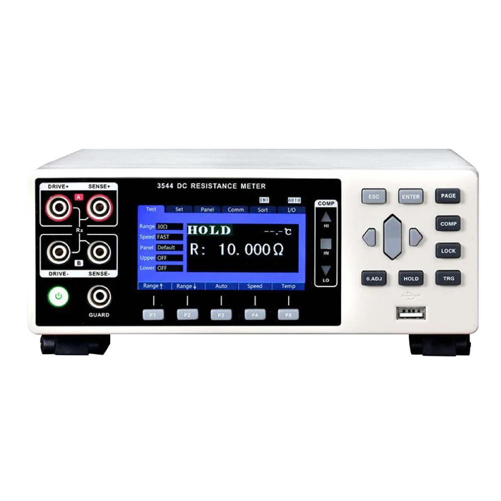
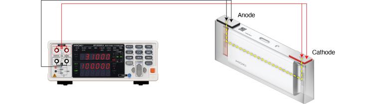
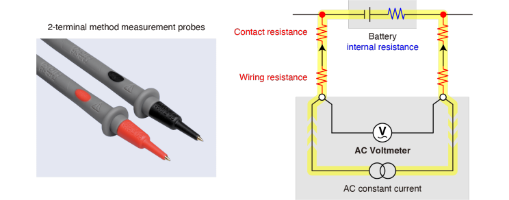
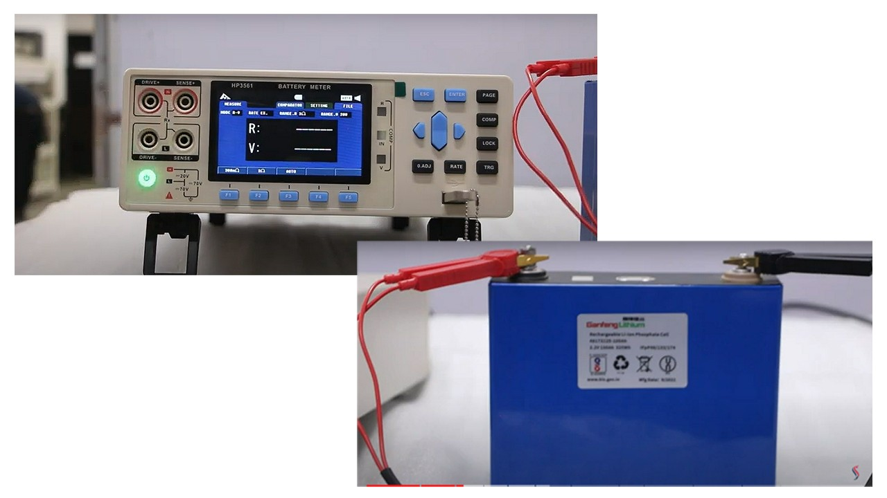
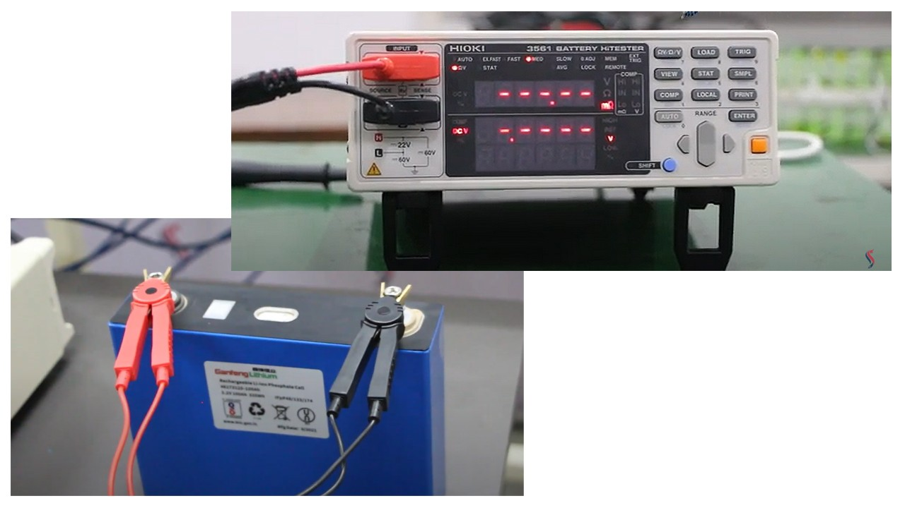
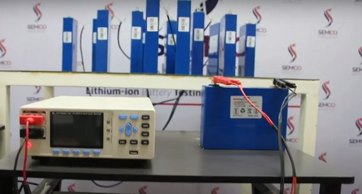
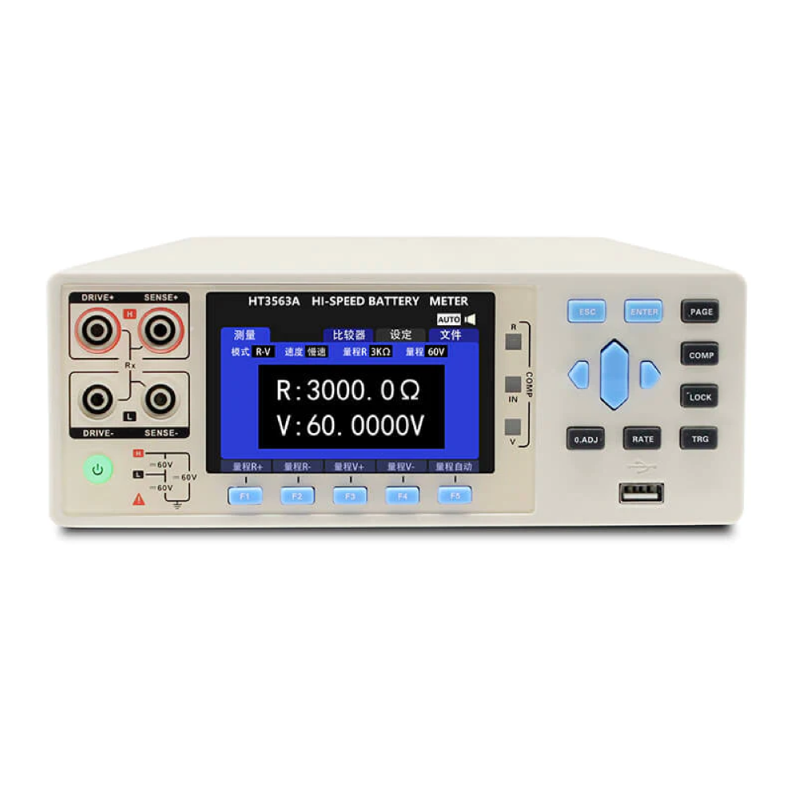
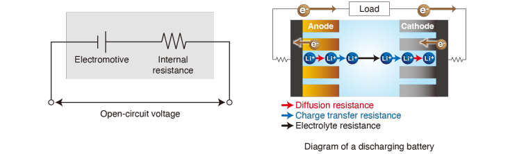
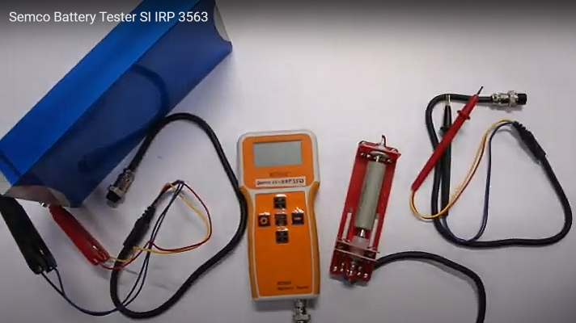

Introduction
A battery internal resistance tester is a specialized device used to measure the internal resistance of a battery. Internal resistance refers to the opposition to the flow of electric current within a battery. By measuring this resistance, the tester provides valuable information about the condition and performance of the battery.
The tester typically applies a known load or current to the battery and measures the voltage drop across the internal resistance. Based on the measured values, it calculates the internal resistance of the battery. This measurement is crucial as it helps assess the health, efficiency, and capacity of the battery.

Battery internal resistance testers are widely used in various industries and applications. They are particularly useful for evaluating the state of rechargeable batteries in automotive, industrial, renewable energy, and electronic devices. By identifying batteries with high internal resistance, potential issues such as reduced capacity, decreased power output, and shorter lifespan can be detected early, allowing for necessary maintenance or replacement.
These testers often come with user-friendly interfaces, advanced measurement techniques, and additional features like data logging and analysis capabilities. They enable professionals and enthusiasts to make informed decisions about battery usage, performance optimization, and overall system reliability.
How did a battery internal resistance tester work?

A battery internal resistance tester works by applying a known load or current to the battery and measuring the resulting voltage drop across the internal resistance of the battery. This measurement allows for the calculation of the internal resistance value.
Here is a step-by-step breakdown of how a battery internal resistance tester typically operates:
Load Application: The tester applies a known load or current to the battery under test. This load can be in the form of a constant current or a specific load pattern depending on the tester's design.
Voltage Measurement: The tester measures the voltage across the terminals of the battery while the load is applied. This voltage drop includes the voltage across both the internal resistance of the battery and the load resistance.
Current Measurement: Simultaneously, the tester measures the current flowing through the battery during the load application. This current is crucial for accurately calculating the internal resistance value.
Calculation: Using Ohm's law (V = I * R), the tester calculates the internal resistance of the battery by dividing the voltage drop across the battery by the measured current.

Display and Analysis: The calculated internal resistance value is displayed on the tester's interface or screen. Some testers may also provide additional analysis and data logging features to help interpret the results and track the battery's performance over time.
It's important to note that battery internal resistance can vary with factors such as temperature, state of charge, and battery chemistry. Therefore, testers often include compensation mechanisms to account for these variables and provide more accurate measurements.
By measuring the internal resistance of a battery, the tester provides valuable information about the battery's condition, health, and performance. This data can be used to assess battery efficiency, identify potential issues, and make informed decisions regarding battery maintenance, replacement, or optimization.
Parameters that affect the process of a Battery Internal Resistance Tester
Several parameters can affect the process and accuracy of a Battery Internal Resistance Tester. Here are some key factors to consider:

Load Current: The magnitude of the current applied to the battery during testing affects the accuracy of the measurement. A higher load current can lead to larger voltage drops across the internal resistance, improving measurement precision. However, excessively high currents may cause excessive heating or voltage drops across other components, impacting the measurement accuracy and battery performance.
Measurement Accuracy: The accuracy of the tester's measurement circuitry plays a crucial role. Precise voltage and current measurements are necessary to obtain accurate internal resistance values. The quality of the tester's components, calibration, and measurement techniques all contribute to the overall accuracy.
Contact Resistance: The resistance at the battery terminals and the connections between the battery and the tester can introduce additional resistance into the measurement. Proper electrode contact and low-resistance connections are essential to minimize contact resistance and obtain accurate results.
Battery State of Charge (SOC): The state of charge of the battery can influence its internal resistance. Internal resistance tends to increase as the battery discharges. Therefore, it is important to consider the battery's SOC during testing, and ideally, perform the measurements at consistent or specified states of charge for reliable comparisons.
Battery Temperature: Temperature has a significant impact on battery performance and internal resistance. Internal resistance tends to decrease with higher temperatures and increase with lower temperatures. Therefore, controlling and compensating for the battery temperature during testing is crucial for accurate measurements.
Battery Chemistry: Different battery chemistries exhibit varying internal resistance behaviors. For example, lead-acid batteries tend to have higher internal resistance compared to lithium-ion batteries. Understanding the specific characteristics of the battery chemistry being tested is important for the accurate interpretation of the internal resistance measurements.
Test Duration: The duration of the load application can affect the stability and accuracy of the measurement. Longer test durations allow for better thermal equilibrium and more reliable results. However, excessively long durations may lead to unnecessary battery discharge or increased testing time.
Considering and addressing these parameters helps ensure accurate and consistent measurements with a Battery Internal Resistance Tester, providing valuable insights into battery performance and health.
Benefits of a Battery Internal Resistance Tester
A Battery Internal Resistance Tester offers several benefits for battery evaluation and analysis. Here are some key advantages of using a Battery Internal Resistance Tester:

Accurate Assessment: The tester provides precise measurements of the internal resistance of a battery. This parameter is crucial for evaluating the battery's health, performance, and remaining capacity. Accurate assessment allows for informed decision-making regarding battery maintenance, replacement, or optimization.
Early Fault Detection: By measuring internal resistance, the tester can detect early signs of battery faults or degradation. Increased internal resistance may indicate issues such as aging, cell imbalance, or electrolyte depletion. Early fault detection enables proactive maintenance or replacement, minimizing the risk of unexpected battery failures.
Performance Optimization: Internal resistance measurements help identify batteries with high resistance, which can negatively impact overall system performance. By replacing or reconditioning batteries with high resistance, the tester enables performance optimization and ensures reliable operation of the system.
Extended Battery Life: Monitoring internal resistance allows for effective battery management practices that can extend battery life. By identifying batteries with deteriorating internal resistance, users can take corrective actions, such as balancing cell voltages or implementing appropriate charging techniques, to mitigate the degradation and prolong battery lifespan.
Cost Savings: By accurately assessing battery health and identifying faulty or inefficient batteries, the tester helps avoid unnecessary battery replacements. This leads to cost savings by maximizing the use of existing batteries and reducing the frequency of unplanned maintenance or system downtime.
Enhanced Safety: Batteries with high internal resistance may pose safety risks due to excessive heat generation or reduced capacity. By promptly identifying such batteries, the tester contributes to system safety by preventing potential hazards associated with faulty or compromised batteries.

Data-driven Decision Making: Many Batteries Internal Resistance Testers offer data logging and analysis capabilities. This allows users to track the performance of batteries over time, generate reports, and make data-driven decisions based on historical trends and patterns.
Versatility: Battery Internal Resistance Testers can be used across various battery types, chemistries, and applications. They are suitable for automotive batteries, industrial batteries, renewable energy systems, and electronic devices, among others.
A Battery Internal Resistance Tester provides accurate assessment, early fault detection, performance optimization, extended battery life, cost savings, enhanced safety, and data-driven decision-making capabilities. It is a valuable tool for battery management and ensures the optimal operation of systems reliant on batteries.
Semco Battery Internal Resistance Tester

Semco has a wide range of products available for testing the resistance of batteries. Among its products, Semco offers the HIOKI IR Tester and DC Resistance Tester. The DC Resistance Tester is available in ranges such as SI HT 3544, 3548, 3542, and 3545. Additionally, Semco provides the insulation resistance tester, which includes a high resistance meter and is available in ranges such as SEMCO SI HT 3530 and SI HT 3530-1. Another product offered by Semco is the Battery Resistance Tester (AC Tester), which comes in ranges like SEMCO SI HT 3554, 3561, 3563-12, 3564, 3563, and 3563-24.
In addition to these products, Semco offers a multi-channel resistance tester that is available in the range of SEMCO SI HT 3544-12, 3544-24, 3542-12, and 3542-24. They also provide a Nickel Resistance Tester and a Battery Tester among their other product offerings.
How to use a Battery Internal Resistance Tester
To use a Battery Internal Resistance Tester effectively, follow these general steps:

Familiarize Yourself with the Tester: Read the user manual and understand the operation and features of the specific Battery Internal Resistance Tester you are using. Pay attention to safety precautions and any specific instructions provided by the manufacturer.
Prepare the Battery: Ensure the battery under test is disconnected from any active electrical systems or charging sources. If necessary, clean the battery terminals to ensure good electrical contact.
Connect the Battery: Connect the positive and negative terminals of the battery to the appropriate terminals on the tester. Follow the manufacturer's guidelines for proper connection.
Configure the Tester: Set the desired parameters on the tester, such as load current, test duration, temperature compensation (if available), and any other specific settings required for accurate measurements. Refer to the user manual for guidance.

Start the Measurement: Initiate the measurement process on the tester. This may involve pressing a start button, selecting a measurement mode, or following specific instructions provided by the tester.
Wait for Stabilization: Allow the tester and battery to stabilize. This typically involves waiting for a specified time or until the measurement readings have reached a steady state. Stabilization ensures accurate and reliable measurements.
Record the Measurements: Once the stabilization period is complete, note down the measured voltage drop and current values displayed on the tester. These measurements are used to calculate the internal resistance.
Calculate Internal Resistance: Use Ohm's Law (V = I * R) to calculate the internal resistance of the battery. Divide the measured voltage drop by the measured current to obtain the internal resistance value.
Interpret the Results: Analyze the calculated internal resistance value in conjunction with the specifications or reference values provided by the battery manufacturer or industry standards. Interpret the results to assess the battery's health, performance, and remaining capacity.
Take Appropriate Action: Based on the internal resistance measurement and interpretation, determine the appropriate course of action. This may involve maintenance, replacement, reconditioning, or further analysis depending on the specific requirements and condition of the battery.
Repeat for Other Batteries: If testing multiple batteries, repeat the process for each battery, ensuring proper disconnection and connection between tests.
Follow Safety Procedures: Adhere to proper safety procedures when handling batteries, including wearing appropriate personal protective equipment and working in a well-ventilated area if required.
Remember, the exact steps and procedures may vary depending on the specific model and features of the Battery Internal Resistance Tester you are using. Always consult the user manual provided by the manufacturer for detailed instructions tailored to your tester.
Got the solution to your battery worries then what are you waiting for book a live demo and operate your battery plant without any hassles and tensions. If you liked our newsletter then do not forget to share and comment and stay tuned for our next Newsletter on “Portable Welding Machine”. Till then “Happy Batteries”.